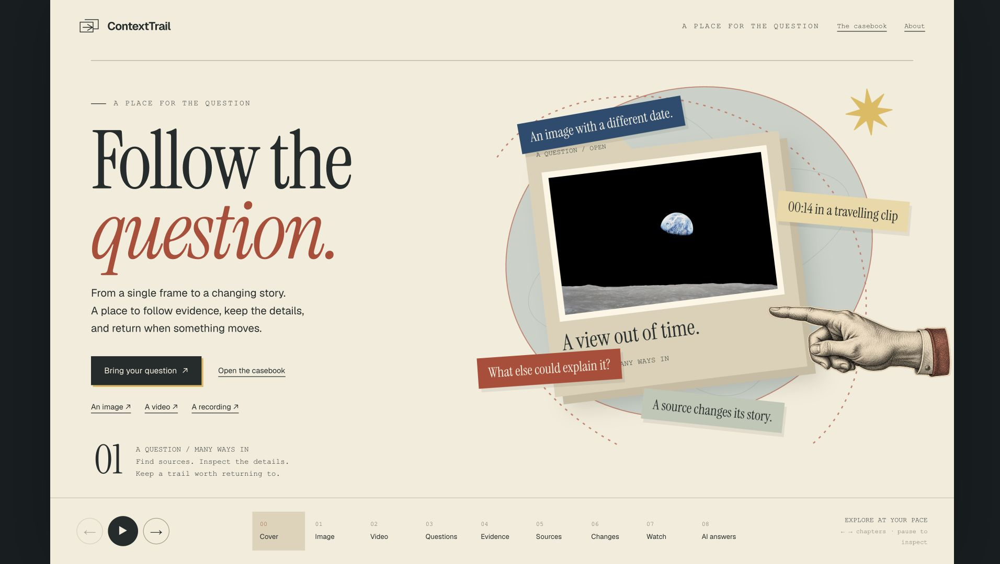
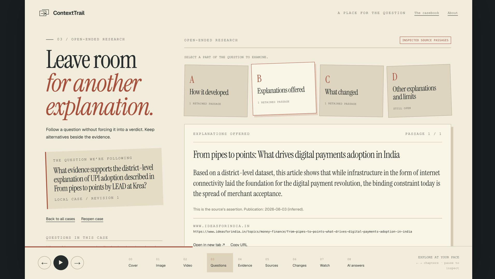

What made
UPI stick?
Better internet? More places to pay? Follow the question into a source, check its dates, and keep the evidence you can return to.
Watch the investigation ↓
Follow the question.
Read the narration
We pay with UPI every day. But what made it stick? Better internet? More places to pay?
Take that question to ContextTrail. This real investigation searched for the district-level evidence behind UPI adoption.
One retrieved article makes a useful distinction. Internet laid the foundation. Its account points to how many merchants accept payment.
Open the retained source. Check when it was published, and when it was retrieved. Here, the publication date is inferred.
Other sources still need checking. Keep the open questions alongside what you found.
Then come back. The same question. The same retained source. You can inspect the passage again, without trying to remember which tab it was.
An image. A clip. A question you are trying to understand. Bring it to ContextTrail, and follow the evidence.
What does the source actually say?
The retained article distinguishes internet infrastructure from merchant acceptance.
“the binding constraint today is the spread of merchant acceptance.”
From pipes to points, Ideas for India.
This is the article's explanation. The saved case leaves other explanations and corroboration open. Its publication date came from search metadata.

Reopen this investigation in the running app ↗
Same saved case, revision 1. Evidence ev-mutstwet-1. Retained span 190–429.
Bring your next question.
An image, a clip, or something you want to understand.